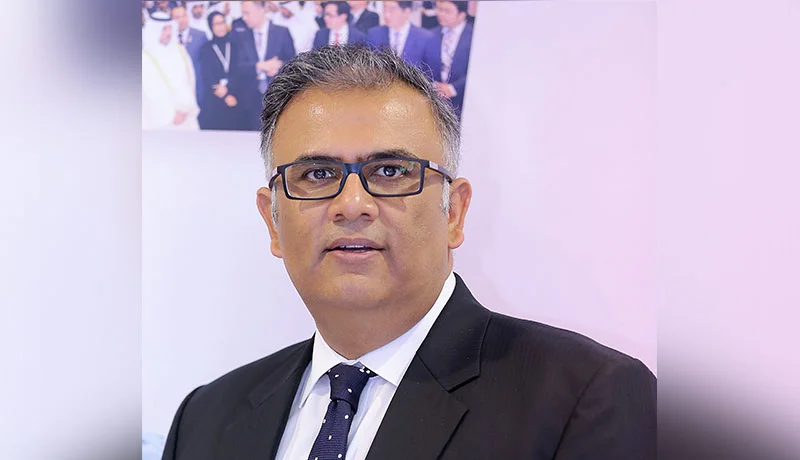

|
За десятилетие с 2010 по 2019 год ЦОДы перестали быть просто помещениями для ИКТ-оборудования и перешли в облако, спрос на них резко возрос по мере быстрого развития новых технологий (включая искусственный интеллект, облачные вычисления, большие данные и 5G), знаменующих начало нового золотого века. При этом они сталкиваются с проблемами, связанными со сложностью получения строительных ресурсов, с длительностью строительства и высоким энергопотреблением. Кроме того, остро стоят вопросы эксплуатации и технического обслуживания дата-центров, а также гибкости их архитектуры. Санджай Кумар Сайнани (Sanjay Kumar Sainani), старший вице-президент и технический директор глобального подразделения центров обработки данных в Huawei, представил прогноз, рассмотрев десять тенденций в этой сфере на последующие пять лет. В прогнозе четко описаны направления и перспективы развития центров обработки данных с 2020 по 2025 год. Высокая плотностьПроизводительность процессоров и серверов постоянно увеличивается по мере роста вычислительных мощностей ИТ-оборудования. С повышением спроса на технологии искусственного интеллекта (ИИ) возрастает также важность вычислительных мощностей ИИ. Для балансировки производительности и затрат центры обработки данных будут увеличивать плотность мощностей. В настоящий момент удельная мощность в центре обработки данных составляет от 6 до 8 кВт на стойку. Ожидается, что к 2025 году это значение достигнет 15–20 кВт. Масштабируемая архитектураКак правило, ИТ-оборудование имеет срок службы от 3 до 5 лет, при этом каждые пять лет удельная мощность удваивается. Срок службы инфраструктуры центра обработки данных составляет от 10 до 15 лет. Таким образом, ЦОД будет соответствовать темпам развития ИТ-оборудования в течение двух-трех поколений. Для оптимизации капитальных затрат на центр обработки данных необходимы возможности масштабирования и поэтапные инвестиции. Кроме того, для предоставления различных ИТ-служб дата-центр должен поддерживать гибридный подход к развертыванию ИТ-оборудования с разными значениями удельной мощности. ЭкологичностьВ настоящее время на центры обработки данных приходится 3% от общего энергопотребления в мире. Ожидается, что к 2025 году суммарное энергопотребление дата-центров превысит значение в 1000 ТВт.ч. При этом остро стоят вопросы энергосбережения, сокращения выбросов и операционных расходов (OPEX). Повышение эффективности энергопотребления и экологичности ЦОДов неизбежно. Такова господствующая тенденция, ориентированная на использование экологически чистой энергии и отработанного тепла, а также на экономию ресурсов (энергии, земли, воды и материалов) в течение всего жизненного цикла ЦОДа. Предполагается, что в ближайшие пять лет в Китае средний коэффициент эффективности энергопотребления (PUE) новых центров обработки данных упадет до 1,1. Быстрота развертыванияИнтернет-сервисы часто сталкиваются со скачками спроса, при которых требования к данным и трафику на стороне сервиса резко возрастают. Поэтому возникает необходимость в быстром развертывании центров обработки данных. С другой стороны, ЦОДы уже превратились из поддерживающей системы в рабочую. Более быстрое развертывание означает, что и выгода будет получена быстрее. В настоящий момент центры обработки данных вводятся в эксплуатацию за 9–12 месяцев. Ожидается сокращение этого срока до полугода. Полная цифровизация и применение технологий ИИВ центрах обработки данных неизбежно будет применяться все больше цифровых и интеллектуальных технологий. По мере постоянного совершенствования технологий Интернета вещей и ИИ дата-центры постепенно начнут переходить от цифровизации одной сферы с целью повысить эффективность эксплуатации, технического обслуживания и энергосбережения к полной цифровизации всего жизненного цикла и автоматическому управлению планированием, строительством, эксплуатацией, техническим обслуживанием и оптимизацией. И здесь будут широко применяться технологии ИИ. Полная модернизацияБудет развертываться больше модульных центров обработки данных, поскольку модульный подход позволяет устранить проблемы, связанные с длительностью строительства и высокими первоначальными вложениями. Принцип модульности уже не будет ограничиваться компонентами, но распространится на архитектуру, аппаратные помещения и в конечном итоге на весь дата-центр. Модульная конструкция позволит быстро развертывать центры обработки данных и гибко расширять их, облегчит процессы эксплуатации и технического обслуживания, а также обеспечит высокую энергоэффективность. Упрощение архитектуры систем электропитания. Замена свинцово-кислотных аккумуляторов литиевымиСистема подачи и распределения питания традиционного центра обработки данных сложна, фрагментирована и занимает большую площадь, затрудняя поиск неисправностей. Упрощенная архитектура системы питания сократит время преобразования энергии, уменьшит занимаемую системой площадь и расстояние подачи питания, а также повысит коэффициенты использования пространства и эффективности энергопотребления системы. По сравнению со свинцово-кислотными литиевые аккумуляторы занимают меньше места и дольше служат. По мере снижения цен на такие аккумуляторы они будут все больше использоваться в центрах обработки данных. Конвергенция жидкостных и воздушных охладительных систем, более широкое применение технологий непрямого испарительного охлаждения вместо водяногоПрименение графических и нейронных процессоров позволит повысить удельную мощность в центрах обработки данных, а жидкостные системы охлаждения станут более популярными. Однако некоторые службы хранения и вычислений по-прежнему используются в сценариях с низкой плотностью. Чтобы в будущем быстро адаптироваться к меняющимся требованиям относительно ИТ-услуг, охладительная система должна поддерживать как воздушное, так и жидкостное охлаждение. Архитектура систем водяного охлаждения настолько сложна, что их трудно эксплуатировать и обслуживать, а также невозможно быстро развертывать. Переход на системы непрямого испарительного охлаждения с модульной архитектурой сократит время развертывания и упростит эксплуатацию. Кроме того, благодаря полноценному использованию естественных ресурсов охлаждения будет значительно снижено и энергопотребление таких систем. В районах с подходящим климатом системы водяного охлаждения будут постепенно заменяться непрямым испарительным охлаждением. Динамическая связь между энергетическими и ИТ-системамиСнижение коэффициента PUE не означает, что энергопотребление центров обработки данных сразу станет оптимальным. Чтобы добиться этого, необходимо рассматривать не просто энергетические установки, но оценивать и оптимизировать энергопотребление дата-центра в целом. Комплексная инновационная деятельность, охватывающая конструкцию объектов, ИТ-оборудование, чипсеты, данные и облачные технологии, позволит согласовать работу энергетических и ИТ-систем для поддержки динамического энергосбережения и оптимизации энергоэффективности всего ЦОДа. НадежностьВ то время как всё шире используются интеллектуальные технологии в центрах обработки данных, растет и количество угроз сетевой безопасности. Для предотвращения атак злоумышленников и угроз со стороны среды, включая вторжения в сеть, необходимо, чтобы ЦОД обеспечивал устойчивость, защищенность систем, конфиденциальность, безопасность для окружающих, надежность и доступность. |